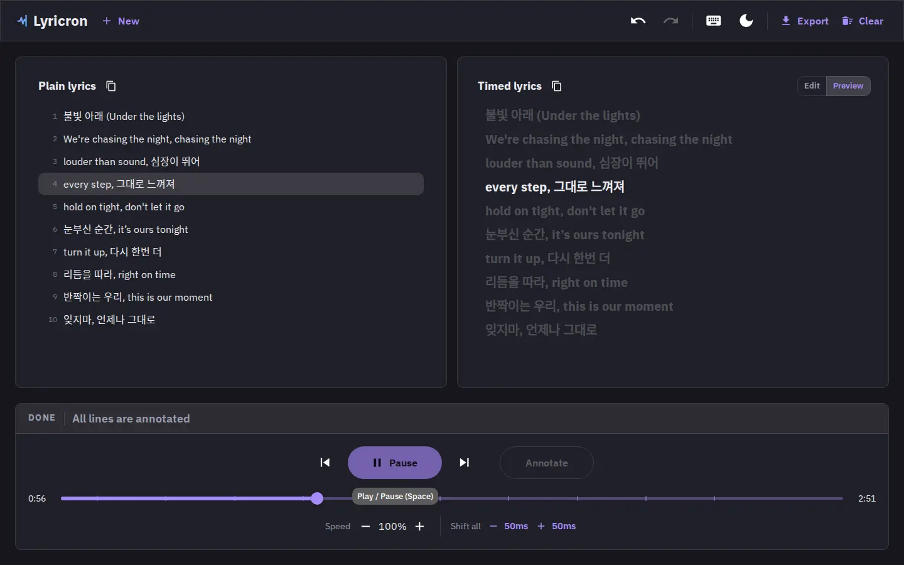

How to Sync Lyrics to a Song
Timing lyrics by ear sounds fiddly until you've done it once. The whole flow is one pass
through the song: load the track, paste the lyrics, and tap the instant each line starts.
Five minutes, a millisecond-accurate .lrc file, and nothing leaves your
device.
What you need
Two things, and you probably already have both: an audio (or video) file and the lyrics. That's it. Lyricron runs entirely in your browser, so there's no account to create, no software to install, and no file ever leaves your machine.
- The song - MP3, WAV, M4A, WebM, or a video file (video plays as audio only).
- The lyrics - plain text you type, paste, or import, or a synced file from LRCLIB.
Load a track
Drag the file anywhere on the page, or click to open the file picker. The waveform loads instantly and playback starts from the top. If you drop a video, only its audio track is used.

Drop an audio or video file anywhere on the page.
Add lyrics
You have four ways in: type them by hand, paste plain
lyrics, import an existing .lrc or .txt, or
search LRCLIB to pull down already-synced (or plain) lyrics for your track.

Manual entry, LRCLIB search, or a file import - your call.
Tap to annotate each line
Press play and hit Annotate the instant each line starts. The button lights up the moment you're allowed to stamp. Leave a blank line (or press Annotate on an empty line) to mark an instrumental gap, and the next sung line picks up right where it should.

The Annotate button lights up when it's ready for the next line.
Preview, then export
Watch the finished sync playback with the active line highlighted in real time. Happy
with it? Copy the timed lyrics to the clipboard or download a ready-to-use
.lrc - or .srt if you need subtitles instead.

Live preview with the active line highlighted, then copy or download.
Every action has a shortcut
Lyricron is built keyboard-first. You can time an entire song without touching the mouse. Here's the full reference:
| Action | Shortcut |
|---|---|
| Play / pause | Space |
| Seek back / forward 5 s | ← / → |
| Seek back / forward 1 s | Shift + ← / Shift + → |
| Previous / next timed line | Ctrl/⌘ + ← / Ctrl/⌘ + → |
| Annotate the next line | Enter |
| Set highlighted line to current time | Ctrl/⌘ + Enter |
| Nudge last line −50 / +50 ms | [ / ] |
| Nudge highlighted line −50 / +50 ms | Ctrl/⌘ + [ / Ctrl/⌘ + ] |
| Delete last timestamp | Delete |
| Extend selection up / down | Shift + ↑ / Shift + ↓ |
| Clear selection | Esc |
| Undo / redo | Backspace (or Ctrl/⌘ + Z) / Ctrl/⌘ + Shift + Z |
Fixing drift
If a line lands a touch early or late, you don't redo the pass - you nudge it. Select a line (or a whole run of lines) and shift timestamps in 50 ms steps, or realign a block to the playhead in one move.
- ±50 ms nudges -
[/]on the active line,Ctrl/⌘ + [/]for the highlighted line. - Shift-all - move every timestamp at once when the whole file needs the same correction.
- Bulk selection - Shift-click a range and nudge or clear the whole block as a single undo step.
Common mistakes (and how to avoid them)
- Starting late - hit Annotate on the first beat of the line, not the first word. The waveform makes the downbeat easy to spot.
- Wrong offset - if every line is consistently early or late, fix it once with shift-all instead of nudging line by line.
- VBR drift - variable-bitrate files can make timestamps wander late in the song. Keep your preview pass tight and nudge where it drifts.
- Missing gaps - stamp a blank line for instrumental sections so the next lyric doesn't highlight too early.
Try it on a track you know
No account, no upload. Open the app and time a song in one pass.